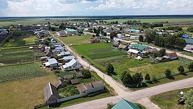

Нурлатский район — административно-территориальная единица и муниципальное образование в составе Республики Татарстан Российской Федерации. Расположен в южной части Татарстана, на стыке с Самарской и Ульяновской областями. Административный центр — город Нурлат (входит в состав района). Площадь района составляет 2 308,95 км², население — около 53 000 человек.